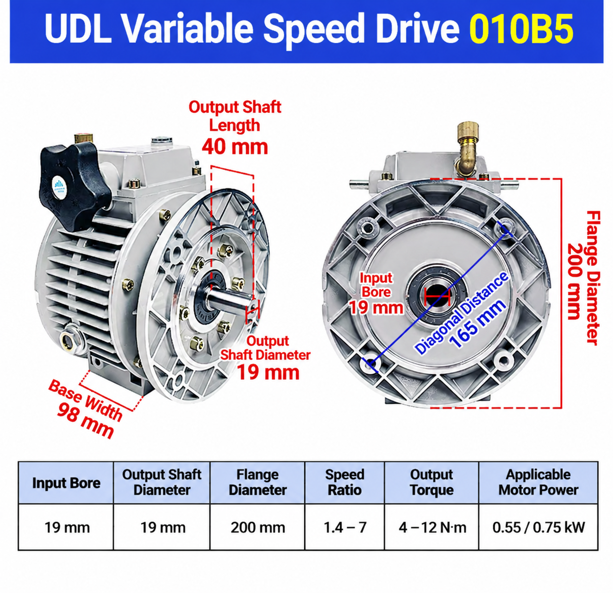

UDL010B5 Dimensions and Reference Specifications
| Specification | UDL010B5 |
|---|---|
| Input bore diameter | 19 mm |
| Output shaft diameter | 19 mm |
| Output shaft length | 40 mm |
| Flange diameter | 200 mm |
| Diagonal mounting distance | 165 mm |
| Base width | 98 mm |
| Adjustable speed ratio | 1.4–7 |
| Reference output speed | Approximately 200–1000 rpm with a 1400 rpm input condition |
| Motor-power options | 0.55 / 0.75 kW |
What Is a UDL010 Variable Speed Drive?
UDL010 is a mechanical stepless speed variator designed for smooth speed adjustment in industrial machinery. Turning the adjustment handwheel changes the output speed within its stated range without changing gears. It can be considered for conveyors, packaging machinery, feeding equipment and other equipment that needs flexible mechanical speed adjustment.
For a smaller B5 variator, compare the UDL005B5 dimension and motor-compatibility guide. The UDL002 0.18 kW speed-variator guide covers another compact configuration.
Motor Power and Output Torque
| Motor power | Stated output-torque range |
|---|---|
| 0.55 kW | 4–8 N·m |
| 0.75 kW | 6–12 N·m |
The supplied diagram presents an overall 4–12 N·m output-torque range. Select the motor power only after checking the required speed range, working load, starts, mounting and motor interface. For electric-motor options, review the SMK electric motor range.
Replacement and Application Checks
Before replacing an existing variator, compare the input bore, output shaft, shaft length, flange, diagonal mounting distance and available installation space. Also confirm the existing motor's shaft, B5 mounting interface, voltage, frequency and required operating speed. If the variator will be used with a gear reducer, see the NMRV worm gearbox range and the motor-to-gearbox matching guide.
SMK can discuss motor configurations and technical options based on the application requirements. Send the driven equipment details, required output speed range, load, operating hours and drawing or nameplate information for a practical check.
Frequently Asked Questions
What are the main UDL010B5 mounting dimensions?
The supplied drawing shows a 200 mm flange diameter, 165 mm diagonal mounting distance and 98 mm base width. Check the complete interface before replacement.
What motor power is available for UDL010?
The supplied reference lists 0.55 kW and 0.75 kW motor options. Confirm the final configuration against the actual application and mounting arrangement.
What is the UDL010 speed ratio?
The stated adjustable speed ratio is 1.4–7. The stated reference output-speed range is approximately 200–1000 rpm under a 1400 rpm input condition.
Can SMK provide a UDL010 solution for a specific application?
Yes. Share the required speed range, load, mounting arrangement and motor information so a suitable technical configuration can be discussed.